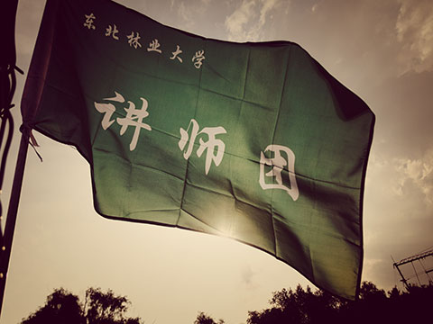
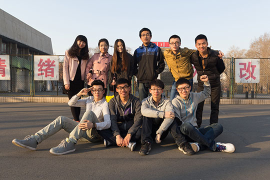
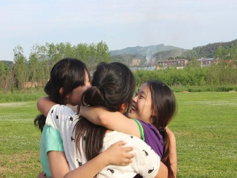
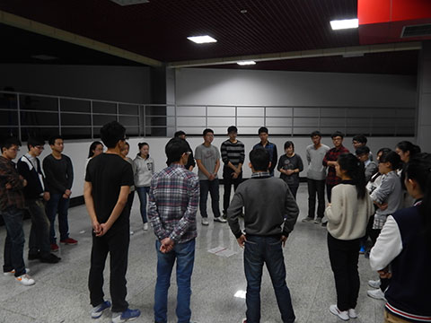
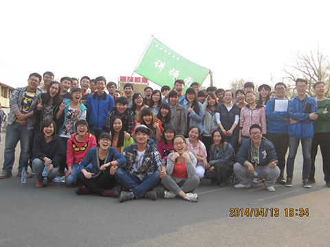
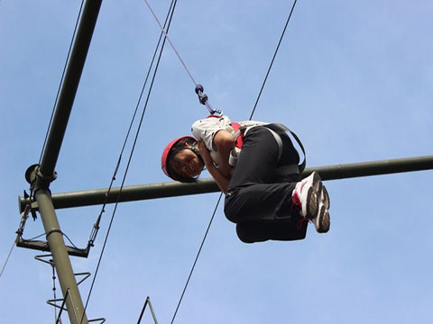
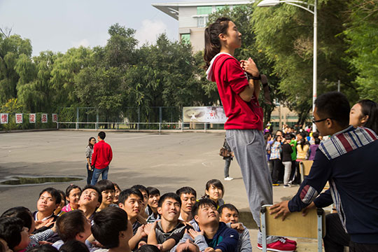
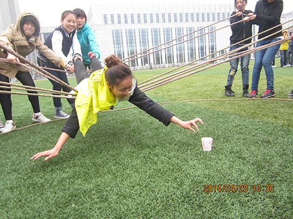
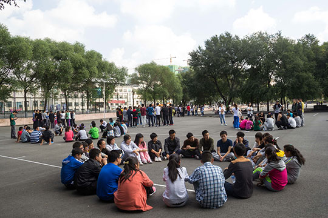
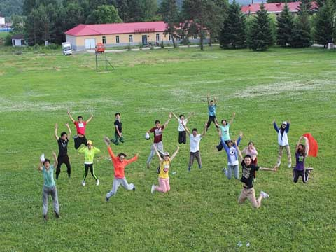

2012年12月，大学里的我结缘素拓。正如我所热爱的前端工作一样，都在我的生命中留下了浓重的一笔……

One team, One dream. 2013年，我们组建了自己的团队“期待”，开启了我们的素拓讲师生涯。讲师团，有你、有我。

每一次的热情相拥都是内心最真实的释放。在共同挑战高空与毕业墙项目中，不抛弃，不放弃，是我们带给彼此的感动。

生活就是要不断地挑战自己。从小菜鸟助教到真正的讲师，每一次蜕变都在告诉我：你的能量超乎你的想象……

带过几十场活动，每次遇见不同的人和事，我才真正体味到：每个人都有自己的一份努力与坚守。每一份付出都值得尊重。

并不是每个人都有足够的勇气从八米的高空跳下去。遇到困难的时候，哪怕是闭着眼也要往前走一步。走着，走着，花就开了……

每次给我感触最深的都是背摔项目。一个团队最难得的就是荣辱与共。我们都要做阳光，相互扶持，温暖彼此。

生活中最有趣的部分是它没有剧本，不能重来；生命中最有分量的部分在于所承担的责任。其实一切都刚刚好……

很喜欢与学员交流与分享的过程，这就像是一场沉淀，去掉浮躁与繁华，静下心来回到内心最本真的地方。

素质拓展，教会我成长；
讲师团，教会我爱。
我会一路走下去……
之于前端，对于生活。